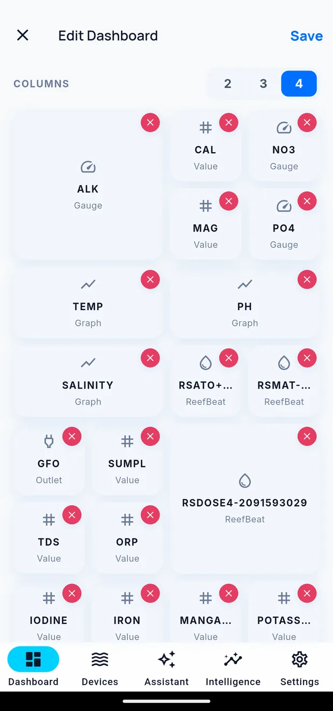

Editing your dashboard
The dashboard editor controls which widgets appear on a tank's dashboard and how they are arranged.
Opening the editor
Scroll to the bottom of the dashboard and tap Edit dashboard.

Setting the column count
Choose 2, 3 or 4 columns at the top of the editor. The grid grows downward as you add widgets, and the dashboard scrolls.
| Columns | Use when |
|---|---|
| 2 | You watch a small number of parameters and want large tiles |
| 3 | Default. Suitable for most tanks |
| 4 | You want a dense view, or you use a large phone |
Adding a widget
- Tap + in the editor.
- Choose what the widget shows — a parameter, a device, or an outlet.
- Choose the widget type. See Widget reference.
Only sources that exist on the tank are offered. A parameter with no source appears once you connect equipment that reports it or log a reading by hand.
Arranging widgets
- To move a widget, press and hold it, then drag. The remaining widgets reflow around it.
- To remove a widget, tap the red cross in its corner.
- To change a widget's settings, tap it.
Resizing
A widget occupies one or two columns and one or two rows. Set the size in the widget's settings.
A trend widget is always at least two columns wide.
Widget settings
Depending on the widget type, you can set:
| Setting | Applies to |
|---|---|
| Label | All types |
| Source | Any parameter reported by more than one thing |
| Time window | Trend — 1 hour, 6 hours, 24 hours, 7 days, 30 days, 1 year |
| Range | Gauge — inherited from the tank's thresholds unless overridden here |
| Size | All types |
Saving
Tap Save to apply the layout, or the close icon to discard your changes.
My dashboards
A layout you like can be saved and reused. My dashboards → Save this design, then name it. You can keep up to 30.
A saved design can be loaded onto another tank, or onto a Cora Max screen.
Restoring a previous layout
A saved design is how you return to a layout you liked. Save one while the dashboard is arranged the way you want it, and you can reapply it later.
It is a restore, not an undo: you pick the design from the list, confirm it, and it replaces the current layout — including dropping any tile the tank cannot fill. It brings back the layout you saved, not the state before your last edit.
Readings, history and journal entries are stored separately from layout, so no edit to a dashboard can lose them.
Editing the Cora Max dashboard
The Cora Max dashboard is edited separately: Devices → your Cora Max → Edit Dashboard. It uses a fixed grid rather than a scrolling one. See Editing the Cora Max dashboard.
Written for Cora Max 0.28.38 and Cora Mobile 0.5.55.
Still stuck? Email cora@coraiq.tech and we'll help.